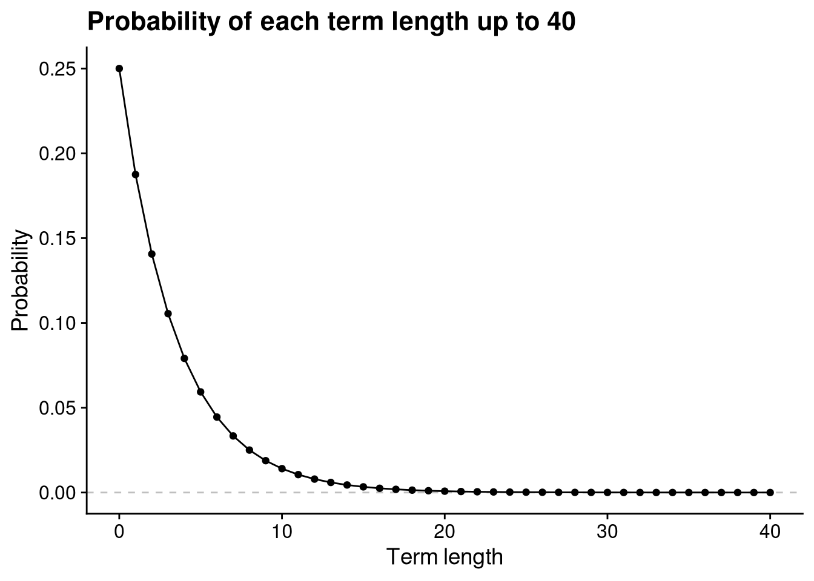
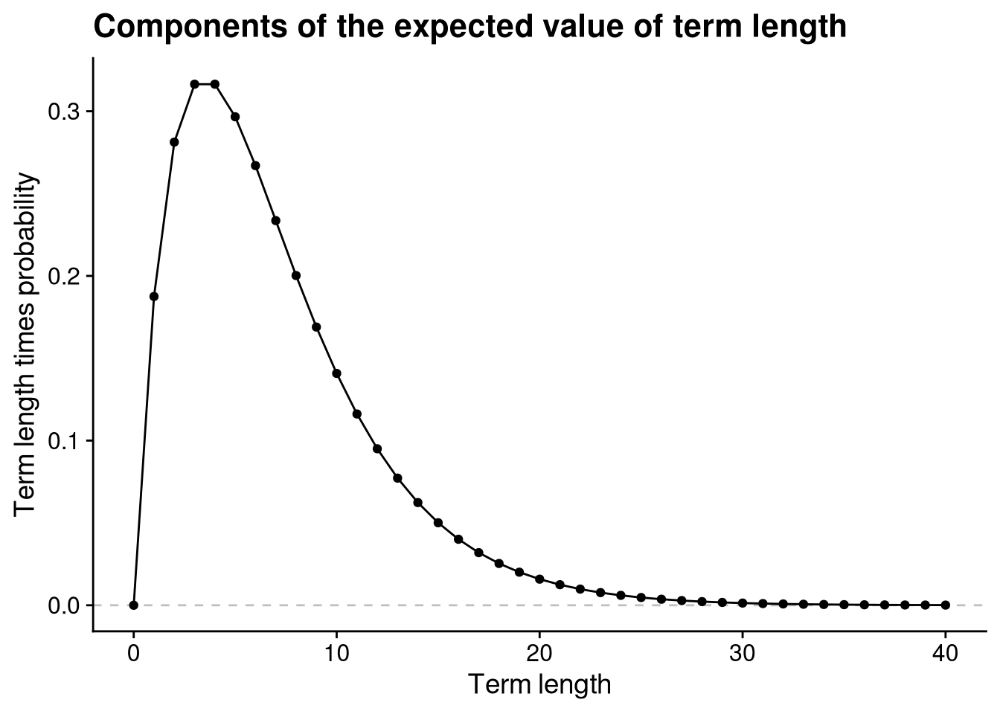
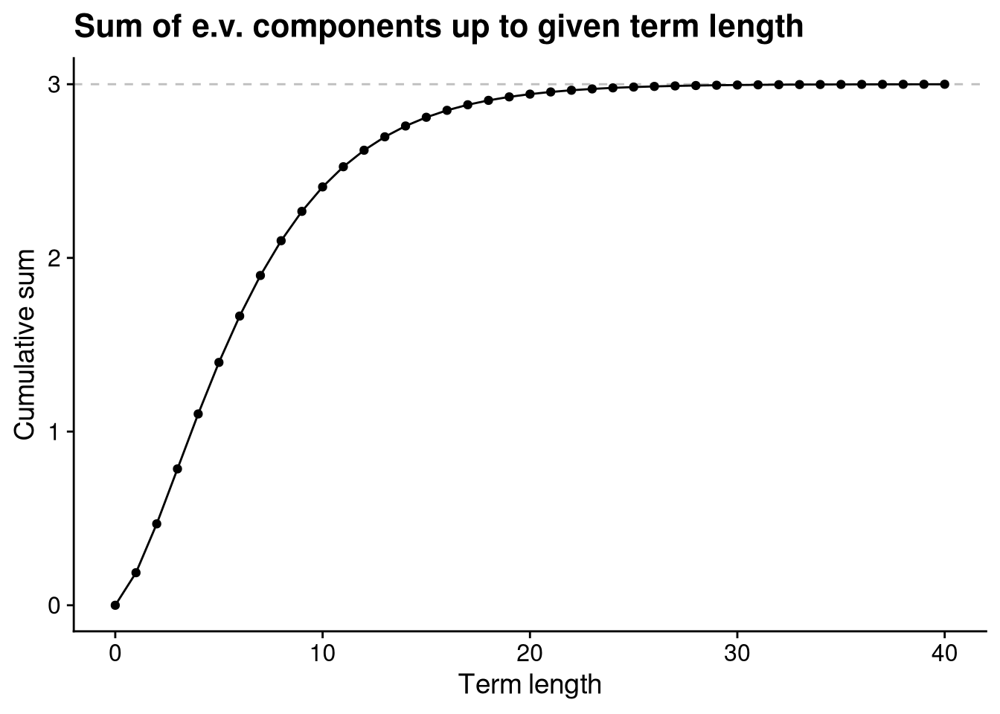
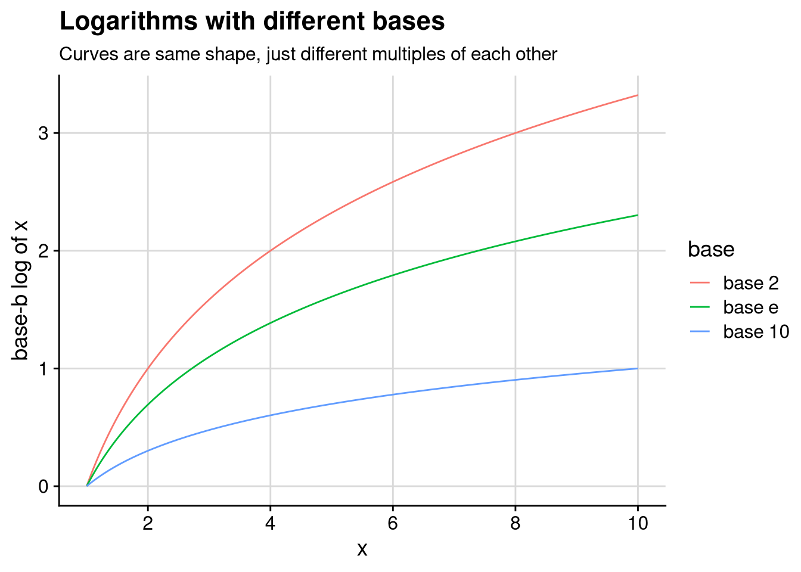
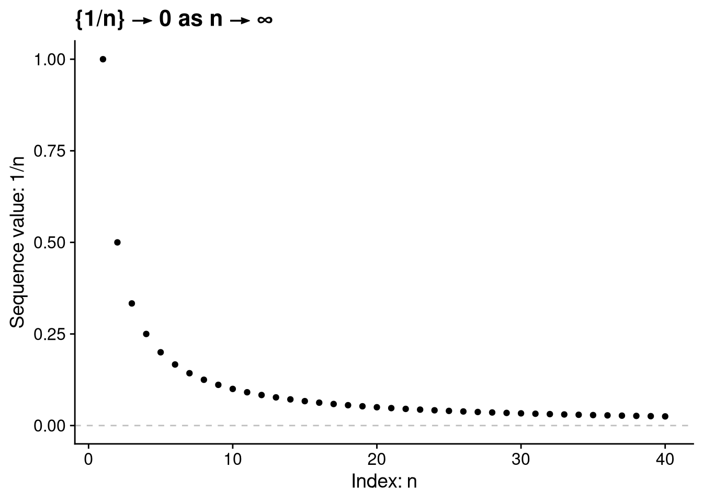
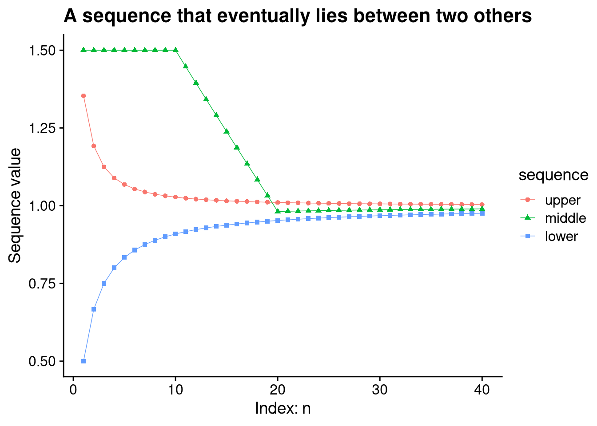
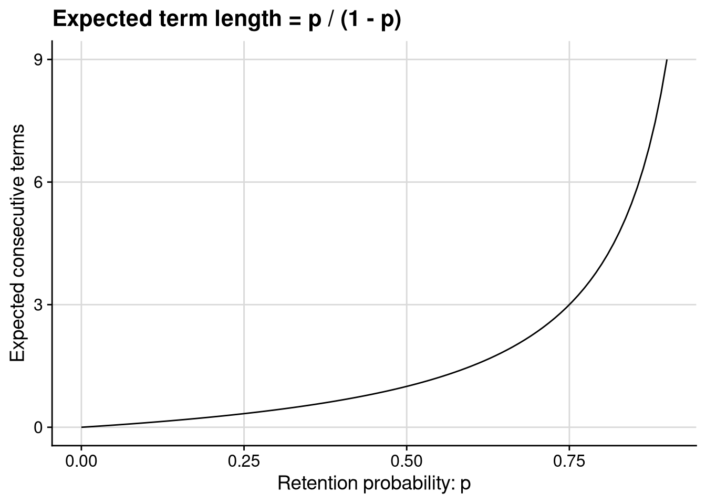

3 Sequences and Series
3.1 Motivating example: Incumbent advantage
I’m going to propose an extremely (overly!) simple model of incumbent party advantage in legislative elections, ask a very simple question of the model, and show that it leads us into having to do an addition of infinitely many terms.
Here’s the model. There is a legislative seat that is contested every election cycle. In each election, the incumbent party wins with probability \(p\) and loses with probability \(1 - p\), where \(0 < p < 1\). These elections are independent in the statistical sense, in that the probability of winning is \(p\) in each cycle, regardless of what has happened before. The question is: given \(p\), how many more terms would we expect the incumbent party to hold the seat, on average?
Our goal here is to calculate the expected value, \[\begin{align} \MoveEqLeft{} \sum_{T = 0}^\infty T \cdot \Pr(\text{term length} = T) \\ &= 0 \cdot \Pr(\text{term length} = 0) + 1 \cdot \Pr(\text{term length} = 1) \\ &\quad + 2 \cdot \Pr(\text{term length} = 2) + 3 \cdot \Pr(\text{term length} = 3) + \cdots \end{align}\]
Summation notation
Don’t remember what \(\sum\) means? Don’t panic! It’s the summation symbol, which we use when we’re adding many things together. For example, think about summing up the square of every number from 1 to 39. We could write that as \[1^2 + 2^2 + \cdots + 38^2 + 39^2.\] A shorter way to write that, with the added advantage of leaving absolutely no ambiguity about precisely what we’re summing up, would be with the summation symbol: \[\sum_{n=1}^{39} n^2.\] More generally, the notation \(\sum_{n=k}^K x_n\) stands for the sum \(x_k + x_{k+1} + \cdots + x_{K - 1} + x_K\). The notation \(\sum_{n=k}^\infty x_n\) stands for a sum of infinitely many terms, \(x_k + x_{k+1} + x_{k+2} + \cdots\) and so on indefinitely.
Given any term length \(T\), there’s a nonzero, though probably quite small, probability that the incumbent party will stay in office at least \(T\) terms. This means we’ll need to add together infinitely many numbers to calculate the expected term length. How can we even do that? Won’t we just end up with infinity at the end?
Let’s get more specific about what we need to calculate here.
The probability that the incumbent party has 0 more terms is the probability of losing the election immediately, namely \(1 - p\).
The probability of exactly one more term is the probability of winning the election this term and then losing the next one, namely \(p \times (1 - p)\).
The probability of exactly two more terms is the probability of winning this election and the next one, then losing the one after that, namely \(p \times p \times (1 - p)\).
The probability of exactly three more terms is the probability of winning the next three elections but losing the one after that, namely \(p \times p \times p \times (1 - p)\).
You might be starting to notice that there’s a certain structure here. The probability that the incumbent party lasts \(T\) more terms in office is \[\underbrace{p \times p \times \cdots \times p}_{\text{$T$ times}} \times (1 - p) = p^T (1 - p).\] This means the expected value we are trying to calculate is \[ \sum_{T = 0}^\infty T \cdot \Pr(\text{term length} = T) = \sum_{T = 0}^\infty T p^T (1 - p). \]
You may be wondering why this formula applies to the \(T = 0\) case too. It applies because \(p^0 = 1\) for any nonzero number \(p\). Therefore, when \(T = 0\), we have \(p^T (1 - p) = 1 - p\), the probability that the incumbent party loses office immediately.
Let’s head to the computer to look at the components of this sum. Sadly we can’t look at all of the infinitely many components, so let’s just go up to \(T = 40\). We will look at the case where \(p = 0.75\). First, for each length up to 40 terms, let’s look at the probability that the terms lasts that long.
If you want to see the R code that generates these figures, go to the Quarto source code for these lecture notes on GitHub.
According to this model, if \(p = 0.75\), then the probability that the incumbent party stays in power for 20 or more consecutive terms is negligible. But this is only part of the expected value calculation. To calculate the expected value, we multiply the probability of each possible term length by the term length itself. So let’s multiply the probabilities from the last figure by the corresponding term length to see the individual components in the expected value calculation.

Term lengths of 3 or 4 end up with the highest weights in the expected value calculation, once we weight the probability of each term length by the number of terms it represents. Perhaps more importantly for our purposes, even after we multiply the probabilities by term length, we see that the values get very close to 0 around \(T = 30\) or so. If this weren’t the case — i.e., if there were some nonzero floor on the expected value components — then the sum we’re trying to calculate, \(\sum_{T=0}^\infty T p^T (1 - p)\), would necessarily be infinite.
Finally, let’s see what we get when we add up the expected value components up to each \(T\). These finite calculations can’t tell us what the infinite sum would equal, but we’ll see that they give us a pretty good idea.

It sure looks like our infinite sum tops out at 3. At this point, if I had to guess, I’d guess that the expected term length is 3 when \(p = 0.75\). How can we say that with certainty instead of just guessing based on the eyeball test? Is there a formula that will let us calculate the expected term length for any value of the term-by-term retention probability \(p\)? By the end of this chapter, we’ll have a mathematical foundation to answer these questions.
3.2 Logarithms
3.2.1 Definition of a logarithm
Before getting into trickier questions about infinite sums, let’s try to answer a simpler question about the underlying probabilities. We’ve already seen that the probability of lasting exactly \(T\) consecutive terms is \(p^T (1 - p)\). What if we wanted to reverse that? For example, what if we wanted to find the lowest term length with a 1% or less chance of occurring?
We could solve this problem by “brute force”: run the calculation for each successive term length \(T\) until we get to the number we’re looking for. Here’s some R code that uses a repeat loop — repeating the same steps over and over, until we explicitly tell the loop to break — to implement the brute force method.
p <- 0.75 # retention probability each term
q <- 0.01 # probability of term length we're looking for
T <- 1 # starting value for term length
repeat {
# Calculate probability of lasting T terms
prob <- p^T * (1 - p)
# If less than or equal to desired probability, stop repeating
if (prob <= q)
break
# Otherwise, add a term and repeat
T <- T + 1
}
# Show the result
print(T)[1] 12The brute force method works, but it’s inelegant and scales poorly. It would be nice if there were a formula to answer our question. Luckily, there is one! We just have to use a logarithm, which is essentially the reverse of an exponent.
Definition 3.1 (Logarithm) For any positive number \(a\) and any positive number \(b \neq 1\), we say that \(x = \log_b a\) (pronounced “\(x\) is the logarithm, base \(b\), of \(a\)”) if and only if \(b^x = a\).
Here are a few examples of logarithms in action.
Because \(2^3 = 2 \times 2 \times 2 = 8\), we have \(\log_2 8 = 3\). In words, 3 is the base-2 logarithm of 8.
Because \(10^{-2} = \frac{1}{10^2} = \frac{1}{100} = 0.01\), we have \(\log_{10} 0.01 = -2\). In words, -2 is the base-10 logarithm of 0.01.
Because \(64^{1/2} = \sqrt{64} = 8\), we have \(\log_{64} 8 = 1/2\). In words, 1/2 is the base-64 logarithm of 8.
Using a logarithm, we can now more elegantly solve our “first consecutive term length whose probability is \(q\) or less” problem. We are looking for the term length \(T\) for which \[p^T (1 - p) \leq q.\] Equivalently, after dividing each side of the above equation by \(1 - p\), we are looking for the term length \(T\) for which \[p^T = \frac{q}{1 - p}.\] We can now solve for \(T\) by taking the logarithm: \[T = \log_p \left(\frac{q}{1 - p}\right).\]
Let’s use this formula to redo the example we solved by brute force earlier. Based on what we saw from the brute force solution, we should expect the formula to spit out a number between 11 and 12.
log(q / (1 - p), base = p)[1] 11.1893.2.2 Properties of exponents and logarithms
Logarithms comes up surprisingly often in mathematical writing and in statistical programming, even in contexts where we’re not solving equations of the form \(a^x = b\). They’re useful because of their helpful properties, some of which we’ll now review.
Logarithm of a product. You might remember that \(b^{y + z} = b^y \times b^z\). As an example to make this more concrete, think about \(2^5\): \[ 2^5 = 2^{2 + 3} = \underbrace{2 \times 2}_{2^2} \times \underbrace{2 \times 2 \times 2}_{2^3} = 2^2 \times 2^3. \]
This fact about exponents is the basis for an extremely helpful property of logarithms: the logarithm of a product is the sum of the logarithms.
Proposition 3.1 (Logarithm of a product) For any positive numbers \(y\) and \(z\) and any positive number \(b \neq 1\), \[\log_b (y \times z) = \log_b y + \log_b z.\]
Proof. By the definition of the logarithm and the property of products of exponents, \[ b^{\log_b y + \log_b z} = b^{\log_b y} \times b^{\log_b z} = y \times z. \] Therefore, again by the definition of the logarithm, \(\log_b (y \times z) = \log_b y + \log_b z\).
This property of logarithms is highly useful in both statistical computing and in calculus. In the statistical context, suppose you need to calculate the probability of some very large number of independent events, resulting in a calculation that looks like \[p_1 \times p_2 \times \cdots \times p_N,\] where \(N\) is some huge number. (For one thing, calculations like this are central to maximum likelihood estimation.) It turns out that computers are not so good at multiplying a lot of very small numbers together. At a certain point, as in the following example, the computer can’t distinguish the product from 0.
# Randomly sample a bunch of numbers each close to 1/100
size <- 500
tiny_numbers <- runif(size, min = 0.009, max = 0.011)
# double check there are no zeroes here
summary(tiny_numbers) Min. 1st Qu. Median Mean 3rd Qu. Max.
0.009001 0.009465 0.009909 0.009940 0.010380 0.010998 # prod() to multiply all numbers in a vector together
prod(tiny_numbers)[1] 0# not just rounding: R thinks the product is zero!
prod(tiny_numbers) == 0[1] TRUEBecause addition is easier for computers than multiplication, we can get a more accurate answer by converting our multiplication problem into an addition problem. Using Proposition 3.1, we know that for any positive base \(b \neq 1\), \[\log_b (p_1 \times p_2 \times \cdots \times p_N) = \log_b p_1 + \log_b p_2 + \cdots + \log_b p_N.\] Let’s use a base of \(b = 10\), since then we can interpret our result in terms of decimal places.
# Convert each number to its base-10 log
logged_numbers <- log(tiny_numbers, base = 10)
# sum() to add all numbers in a vector together
sum(logged_numbers)[1] -1001.661Now we have a much more accurate calculation: the product of the 500 small numbers we randomly drew is \(10^{-1001.661}\).
Logarithm of a power. Again thinking about exponents, you might remember that \((b^y)^z = b^{y \times z}\). For example, think about \(5^6\): \[5^6 = 5^{3 \times 2} = \underbrace{5 \times 5 \times 5}_{5^3} \times \underbrace{5 \times 5 \times 5}_{5^3} = (5^3)^2.\] This property of exponents delivers us another helpful property of logarithms: the log of \(y\) to the \(z\)’th power is \(z\) times the log of \(y\). Or, as I think of it, logarithms turn powers into coefficients.
Proposition 3.2 (Logarithm of a power) For any positive number \(y\), any number \(z\), and any positive base \(b \neq 1\), \[\log_b (y^z) = z \log_b y.\]
Proof. By the definition of the logarithm and the property of powers of exponents, \[b^{z \log_b y} = (b^{\log_b y})^z = y^z.\] Therefore, again by the definition of the logarithm, \(\log_b (y^z) = z \log_b y\).
Logarithm of a ratio. We saw in Proposition 3.1 that logarithms turn multiplication problems into addition problems. For similar reasons, they turn division problems into subtraction problems.
Proposition 3.3 (Logarithm of a ratio) For any positive number \(y\), any positive number \(z\), and any positive base \(b \neq 1\), \[\log_b \left(\frac{y}{z}\right) = \log_b y - \log_b z.\]
You’ve already got the tools you need to prove this one yourself, so I’m leaving the proof as an exercise for you.
Exercise 3.1 Prove Proposition 3.3. (Hint: use both of the two previous properties of logarithms, Proposition 3.1 and Proposition 3.2.)
Answer
The ratio \(\frac{y}{z}\) is equivalent to the product \(y \times z^{-1}\). Therefore, Proposition 3.1 implies \[\log_b \left(\frac{y}{z}\right) = \log_b (y \times z^{-1}) = \log_b y + \log_b (z^{-1}).\] Furthermore, Proposition 3.2 gives us \(\log_b (z^{-1}) = - \log_b z\). We conclude that \[\log_b \left(\frac{y}{z}\right) = \log_b y + \log_b (z^{-1}) = \log_b y - \log_b z.\]
Logarithm of 1. The number 1 is special. Perhaps you recall the mathematical rule that \(b^0 = 1\) for any positive number \(b\). It follows immediately that the logarithm of 1 is always 0, regardless of which base we are working with.
Proposition 3.4 (Logarithm of 1) For any positive base \(b \neq 1\), \[\log_b 1 = 0.\]
Let’s go back to this rule that \(b^0 = 1\) for any positive number \(b\). The mathematical expression \(b^0\) is confusing. We typically think of \(b^x\) as meaning “multiply \(b\) together \(x\) times.” How can we multiply \(b\) together 0 times? What does that even mean?
I’m sure someone out there has a deep explanation of why it makes sense for \(b^0\) to equal 1. But I’m a mathematical pragmatist. What I know is that our rule that \(b^{x + y} = b^x \times b^y\) would completely break down if \(b^0\) had any value other than 1. For example, imagine instead that we had \(b^0 = 42\) for some base \(b\). Well, then, our usual rule about exponents of sums would give us \[ b = b^1 = b^{0 + 1} = b^0 \times b^1 = 42 b. \] That can’t be right! The only sensible way forward is to assume \(b^0 = 1\). I don’t lose any sleep over not having some kind of physical or visual intuition why this is the case, because I know that it’s the only way to handle powers of 0 that doesn’t cause other important things to break.
Sometimes you’ll run into things like this in mathematics. It’s different for everyone. Some people get hung up on the “imaginary” number \(i = \sqrt{-1}\), which I’m happy to tell you basically never comes up in the work political scientists do. Others get hung up on the idea of spaces with more than 3 dimensions, which very much do come up in the work we do. Heck, I know people who are skeptical of the idea of negative numbers because they can’t visualize them.
Whenever I run into one of these things that I can’t directly visualize or comprehend with a physical analogy, I instead try to think about its role in the mathematical system I’m working with. I can’t “see” why \(b^0 = 1\), but I know that it ensures \(b^{x + y} = b^x \times b^y\). I can’t “picture” the imaginary number \(i\), but I know that it lets us solve algebraic equations like \(x^2 + 4 = 0\). I definitely can’t “visualize” a linear function through 631-dimensional space, yet while I was writing these notes my computer was estimating a regression model with 631 parameters. Don’t feel like you have to be able to picture every mathematical rule or object — it’s enough just to understand how it helps you solve a particular problem.
Base changes and the natural logarithm. Suppose we know that the base-2 logarithm of 16 is 4, i.e., \(\log_2 16 = 4\). What, if anything, does this tell us about the base-8 logarithm of 16?
It turns out that there’s a pretty handy formula to change a logarithm from one base to another. To change the base-\(b\) logarithm of \(y\) to a base-\(c\) logarithm, we just rescale it by the base-\(b\) logarithm of \(c\).
Proposition 3.5 (Logarithm base changes) For any positive number \(y\) and any positive bases \(b \neq 1\) and \(c \neq 1\), \[\log_c y = \frac{\log_b y}{\log_b c}.\]
Proof. Using the definition of a logarithm twice and the properties of exponents once, we have \[ y = c^{\log_c y} = (b^{\log_b c})^{\log_c y} = b^{(\log_b c) \times (\log_c y)}. \] Therefore, again by the definition of a logarithm, \[\log_b y = (\log_b c) \times (\log_c y).\] We obtain the proposition by dividing both sides by \(\log_b c\).
Now we can calculate the base-8 logarithm of 16. Since \(2^4 = 16\), we know that \(\log_2 16 = 4\). And since \(2^3 = 8\), we know that \(\log_2 8 = 3\). Therefore, using Proposition 3.5, we have \[\log_8 16 = \frac{\log_2 16}{\log_2 8} = \frac{4}{3}.\]
In a sense, the upshot of Proposition 3.5 is that it doesn’t matter what base we use — the value of the logarithm scales up or down with the value of the base, but the shape of the curve is the same regardless, as illustrated in Figure 3.4. So if we’re doing something like logging a variable in a linear regression, our results will be substantively the same regardless of which logarithmic base we use. Since the choice of base doesn’t substantively affect our findings, we should choose whatever base is most convenient for interpretation.

This figure shows three common choices of base for the logarithm. You are probably familiar with the numbers 2 and 10. You might be less familiar with the number \(e\), aka Euler’s number, which is equal to roughly 2.718 and comes up repeatedly in high-end math. This number is important enough that we call the base-\(e\) logarithm the natural logarithm. For now, I’m going to ask you to trust me that \(e\) is important — you’ll be able to see the reasoning a bit better once we get to calculus.
In these notes, when I write \(\log y\) without an explicit base, I mean the natural logarithm of \(y\). Similarly, the log() function in R takes the natural logarithm if you don’t specify a base. If you want to take a base-\(e\) exponent in R, use the exp() function.
log versus ln
In other contexts, including high school math (if my early-2000s experience still holds), people use \(\ln\) to mean the natural logarithm and \(\log\) to mean the base-10 algorithm. ChatGPT tells me that engineers are also fond of this usage. But in political science, economics, and statistics writing, as well as in the overwhelming majority of math textbooks at the college level and beyond, \(\log\) means the natural logarithm.
Proposition 3.5 tells us why it’s mostly harmless to just use the natural logarithm for everything. If for some reason you ever need to convert a natural logarithm to a different base, you can just use the formula \[\log_b y = \frac{\log y}{\log b}.\]
3.3 Sequences and limits
In terms of our motivating example, we’ve used the logarithm to find the term length \(T\) that corresponds to a particular probability of lasting that long, \(p^T (1 - p)\). Looking at Figure 3.1, it seems like these probabilities get closer and closer to 0 as \(T\) increases, though they never quite hit 0 exactly. Is there a way we can say that more precisely? For that, we’ll need to learn about sequences and their limits.
A sequence is an infinite, ordered list of numbers. We write \(\{x_n\}\) to denote the sequence \(x_1, x_2, x_3, \ldots\), with \(x_n\) standing for the \(n\)’th entry in the sequence. Unlike with sets, order and repetition matter in a sequence. For example, the sequence \(0, 1, 0, 1, \ldots\) is distinct from the sequence \(1, 0, 1, 0, \ldots\) and the sequence \(0, 0, 1, 1, 0, 0, 1, 1, \ldots\).
Sequences vs. sets
Because we use curly brackets to denote both sequences and sets, there are some cases where it can be confusing to distinguish a single-element set from a sequence. The main context clue to look for is the presence of an index subscript: for example, \(\{3\}\) isn’t a sequence because there’s no index variable. By the same token, it would be cruel and unusual for a mathematical writer to use \(\{x_n\}\) to mean “the set whose sole element is \(x_n\)” rather than “the sequence \(x_1, x_2, \ldots\).” If you ever want to send a very strong signal that something is a sequence, you may use a subscript to explicitly call out the index, using the notation \(\{x_n\}_{n=1}^\infty\). Or, you know, you can just say “the sequence \(\{x_n\}\).” Words are helpful!
A sequence is ordered, in that it is sensible to talk about the first or tenth or 1,052,402nd element of a sequence. Additionally, any sequence we’ll talk about for now will consist of elements that are all real numbers. (I’ll let you know if and when we’re dealing with sequences of other types of mathematical object.) Putting these two facts together, you can also think of a sequence as a function that maps the set of natural numbers, \(\mathbb{N}\), into the set of real numbers, \(\mathbb{R}\).
3.3.1 Definition of a limit
Think about the sequence \(1, \frac{1}{2}, \frac{1}{3}, \frac{1}{4}, \ldots\). To denote this formally, let \(\{x_n\}\) be the sequence where each \(x_n = \frac{1}{n}\). The further we go along this sequence, the closer the values get to 0 — though we never quite get all the way there. Indeed, we would say the limit of the sequence is 0, which we’d denote by writing \(\lim_{n \to \infty} x_n = 0\) or, more simply, \(\{x_n\} \to 0\).

What we need now is a precise mathematical notion of “getting closer and closer.” The infinite nature of a sequence makes this tricky. We can’t follow the sequence and see that it ends at 0, because the sequence has no end! To get around this issue, mathematicians use what I think of as a “challenge-response” definition of a limit. Here’s what I mean by that. Suppose I have a sequence \(\{x_n\}\) and claim that its limit is a number \(x\).
You challenge me by picking a number \(\epsilon > 0\). Think of this as you saying “I need you to show me that once we get far enough along the sequence, every value is within \(\epsilon\) of your supposed limit.”
I respond to the challenge by identifying an index \(N\) after which the sequence values are as close as you demand. In particular, I need to show you that \(x - \epsilon < x_n < x + \epsilon\) for all indices \(n \geq N\).
My claimed limit is true if and only if I can conjure up a valid response to any \(\epsilon > 0\) that you might pick. The formal definition of a limit puts this process in precise mathematical terms.
Definition 3.2 (Finite limit) The sequence \(\{x_n\}\) has a limit of \(x \in \mathbb{R}\) if the following condition is satisfied: for any real number \(\epsilon > 0\), we can identify an index \(N\) such that \(|x_n - x| < \epsilon\) for all \(n \geq N\). The sequence is convergent if and only if \(\lim_{n \to \infty} x_n = x\) for some finite number \(x\).
A sequence cannot have two distinct limits. If the sequence \(\{x_n\}\) is getting ever closer to \(x\) as \(n\) increases, it cannot also be getting ever closer to some other number \(x'\). We won’t go all the way through a proof of this claim, but here’s the basics of how it would work. Letting \(d\) stand for half the distance between the limit \(x\) and some other number \(x'\), we know from the formal definition of a limit that after a certain point, every \(x_n\) lies between \(x - d\) and \(x + d\). This in turn means that every \(x_n\) from this point onward is at least \(d\) away from \(x'\), meaning that \(x'\) cannot possibly be the limit of the sequence — there is no valid response to the challenge where \(\epsilon = d\).
It can be tricky to use the formal definition (Definition 3.2) to prove that some number is indeed the limit of a specified sequence. Even if you can “see” that some sequence is getting ever closer to its limit, how can you show that the precise formal definition is satisfied? To make the challenge-response process a bit more concrete, let’s apply it to the problem of showing that \(\lim_{n \to \infty} 1/n = 0\).
Example 3.1 We want to prove that \(\lim_{n \to \infty} 1/n = 0\). To do so, we must show that for any choice of a number \(\epsilon > 0\), we can find an index \(N\) such that \(-\epsilon < 1/n < \epsilon\) for all \(n \geq N\).
You can think about this as a “for all” claim: namely, that for all \(\epsilon > 0\), there is an index \(N\) that meets the requirement above. So to prove it, we will follow the method laid out in Note 2.1 in the previous chapter. That is, we will take an “arbitrary” \(\epsilon > 0\) — a number \(\epsilon\) that we know nothing about, besides that it’s greater than 0 — and prove that we can find an index \(N\) that meets the requirement.
Proof: Take an arbitrary \(\epsilon > 0\). Because \(\epsilon > 0\), the fraction \(1/\epsilon\) is finite and positive (though perhaps very large). Let \(N\) be any integer greater than \(1/\epsilon\). For any \(n \geq N\), we have \[\frac{1}{n} \leq \frac{1}{N} < \frac{1}{1/\epsilon} = \epsilon.\] Combined with the fact that \(1/n > 0 > -\epsilon\) for all \(n\), we have shown that there exists an index \(N\) such that \(-\epsilon < 1/n < \epsilon\) for all \(n \geq N\). Because \(\epsilon\) was chosen arbitrarily, this completes the proof that \(\lim_{n \to \infty} 1/n = 0\).
It would be reasonable to be skeptical about the (critical!) step in Example 3.1 where I assert the existence of an integer greater than \(1/\epsilon\). If you are indeed skeptical in this way, don’t worry — the Archimedean property of the real numbers guarantees it. (And if you weren’t skeptical, perhaps you should have been?)
We can use a similar proof to show that the sequence of term length probabilities in our motivating example, \(\{p^T (1 - p)\}_{T = 1}^\infty\), has a limit of 0. To do that, we’ll need to use logarithms.
Example 3.2 We want to prove that \(\lim_{T \to \infty} p^T (1 - p) = 0\). To do so, we must show that for any choice of a number \(\epsilon > 0\), we can find an index \(N\) such that \(-\epsilon < p^T (1 - p) < \epsilon\) for all \(T \geq N\).
Proof: Take an arbitrary \(\epsilon > 0\). Because \(0 < p < 1\), the value \(p^T\) decreases with \(T\) as long as \(T \geq 1\). So the tricky part is to show that we can find some term length such that \(p^T (1 - p) < \epsilon\), or equivalently that \(p^T < \frac{\epsilon}{1 - p}\). We know from the definition of the logarithm that \(\log_p \frac{\epsilon}{1 - p}\) is the solution to the equation \(p^x = \frac{\epsilon}{1 - p}\). This gives us precisely what we need to meet the formal definition of a limit.
Let \(N\) be any integer greater than \(\log_p \left(\frac{\epsilon}{1 - p}\right)\). For any \(T \geq N\), we have \[p^T (1 - p) \leq p^N (1 - p) < p^{\log_p \left(\frac{\epsilon}{1 - p}\right)} (1 - p) = \left(\frac{\epsilon}{1 - p}\right) (1 - p) = \epsilon.\] Combined with the fact that \(-\epsilon < 0 < p^T (1 - p)\) for all \(T\), we have shown that there exists an index \(N\) such that \(-\epsilon < p^T (1 - p) < \epsilon\) for all \(T \geq N\). Because \(\epsilon\) was chosen arbitrarily, this completes the proof that \(\lim_{T \to \infty} p^T (1 - p) = 0\).
As an exercise to get some practice with the formal definition of a limit, I’ll have you prove a reasonably simple claim. If we have a constant sequence, so that \(x_n = c\) for every index \(n\), then the limit of this sequence is \(c\).
Exercise 3.2 (Limit of a constant sequence) Let \(c\) be a constant real number. Prove that if \(x_n = c\) for all \(n\), then \(\{x_n\} \to c\).
Answer
We must prove that for every \(\epsilon > 0\), there is an index \(N\) such that \(c - \epsilon < x_n < c + \epsilon\). To this end, take an arbitrary \(\epsilon > 0\). For all \(n \geq 1\), we have \(x_n = c\) and therefore \(c - \epsilon < x_n < c + \epsilon\). We have thus shown that \(N = 1\) is a valid response to any \(\epsilon > 0\) challenge, thereby proving that \(\{x_n\} \to c\).
Not every sequence is convergent. We call a sequence divergent if it is not convergent. One reason that a sequence might be divergent is that the values in the sequence increase (or decrease) without bound. For example, the sequence \(1, 2, 3, \ldots\) is divergent, as are the sequences \(-1, -2, -3, \ldots\) and \(1, -1, 2, -2, 3, -3, \ldots\). In fact, it turns out that a necessary condition for a sequence to converge is that the sequence be bounded.
Definition 3.3 (Bounded sequence) We say the sequence \(\{x_n\}\) is bounded if there is a finite number \(B\) such that \(-B \leq x_n \leq B\) for all indices \(n\).
Proposition 3.6 (Convergent implies bounded) If \(\{x_n\}\) is convergent, then it is bounded.
Proof. Suppose the sequence \(\{x_n\}\) is convergent, and let \(x\) denote its limit. According to the formal definition of a limit (Definition 3.2), there is an index \(N\) such that \(x - 1 < x_n < x + 1\) for all indices \(n \geq N\). Let \(B_{\text{left}}\) be the lowest value in the finite set \(\{x_1, \ldots, x_N, x - 1\}\), and let \(B_{\text{right}}\) be the greatest value in the finite set \(\{x_1, \ldots, x_N, x + 1\}\). Then, let \(B\) be whichever of \(|B_{\text{left}}|\) and \(|B_{\text{right}}|\) is greater. For every index \(n\), we have \[-B \leq B_{\text{left}} \leq x_n \leq B_{\text{right}} \leq B,\] so \(\{x_n\}\) is bounded.
An equivalent statement would be the contrapositive, “If \(\{x_n\}\) is not bounded, then it is not convergent.” That’s a useful fact in practice. If you observe that a sequence is unbounded, you can stop looking for a finite limit — it can’t have one.
Proposition 3.6 is an “if” statement, not an “if and only if.” Just as every zebra is a mammal but not every mammal is a zebra, every convergent sequence is bounded but not every bounded sequence is convergent. The next exercise asks you to think of an example.
Exercise 3.3 (Bounded does not imply convergent) Come up with an example of a bounded sequence that is not convergent.
Answer
There are many examples of convergent sequences that are not bounded, but the simplest one I can think of is \(0, 1, 0, 1, \ldots\), i.e., the sequence \(\{x_n\}\) where each \[ x_n = \begin{cases} 0 & \text{if $n$ is odd}, \\ 1 & \text{if $n$ is even}. \end{cases} \] To prove that \(\{x_n\}\) is not convergent, I will just rule out every number as a potential limit for it.
No \(x \neq 0\) may be the limit of \(\{x_n\}\). To see why, take any \(x \neq 0\). To show that \(x\) is not the limit, we need to find a “challenge” value \(\epsilon\) for which there is no valid response.
I claim that \(\epsilon = |x|\) is this type of unmeetable challenge. To show that the challenge cannot be met, we need to show that at any point in the sequence, we can find a value there or further along that is at least \(\epsilon\) away from \(x\). To do this, take any index \(n\). Then either \(x_n = 0\) or \(x_{n+1} = 0\), meaning that either \(|x_n - x| \geq \epsilon\) or \(|x_{n+1} - x| \geq \epsilon\). Therefore, \(x\) cannot be a limit of the sequence.
No \(x \neq 1\) may be the limit of \(\{x_n\}\) either. The logic here is the same as in the previous step — just take any \(x \neq 1\) and show that the challenge with \(\epsilon = |x - 1|\) cannot succeed.
The first step leaves \(x = 0\) as the only possible limit, but the second step rules that out too. Therefore, \(\{x_n\}\) has no limit.
Any sequence that is bounded and divergent must oscillate (go up and down and up and down and …) as in my answer to Exercise 3.3. A monotone sequence, in which the values always increase (every \(x_{n+1} \geq x_n\)) or always decrease (every \(x_{n+1} \leq x_n\)), always converges if it is bounded. This fact about monotone sequences is important enough in the study of calculus that I will state it as a theorem. However, I will skip over proving it, as the proof relies on some real analysis concepts that we don’t have the bandwidth to cover in this course.
Theorem 3.1 (Monotone Convergence Theorem) If \(\{x_n\}\) is bounded and monotone, then it is convergent.
The Monotone Convergence Theorem tells us that particular sequences have a finite limit, but doesn’t say what that limit is. For example, think again about the sequence of the incumbent party serving \(T\) more consecutive terms in our running example, \(\{p^T (1 - p)\}_{T = 1}^\infty\). Because \(p^T\) decreases with the number of terms \(T\), this sequence is monotone. And because \(0 \leq p^T (1 - p) \leq 1 - p\) for all \(T\), it is bounded. We can therefore infer from the Monotone Convergence Theorem that this sequence is convergent, as we indeed saw above in Example 3.2. However, to go from “this sequence has a limit” to “this sequence’s limit is 0,” we needed more than the Monotone Convergence Theorem alone would give us.
3.3.2 Infinite limits
To sum up where we are so far, here’s what we know about the relationship between boundedness, monotonicity, and the convergence of a sequence.
Bounded and monotone ⇒ definitely convergent
Bounded and not monotone ⇒ maybe convergent, maybe not
Unbounded ⇒ definitely divergent
Although every unbounded sequence is divergent, there are still some distinctions we can draw among them.
If the values of the sequence are always going higher, then we would say it has a limit of \(\infty\). The sequence \(\{n\} = 1, 2, 3, \ldots\) is an example.
If the values of the sequence are always going lower, then we would say it has a limit of \(-\infty\). The sequence \(\{-n^2\} = -1, -4, -9, \ldots\) is an example.
An unbounded sequence can still oscillate and have no limit. The sequence \(\{(-1)^n n\} = -1, 2, -3, 4, \ldots\) is an example.
Our formal definition of an infinite limit has a challenge-response structure similar to the definition of a finite limit (Definition 3.2). Here the “challenge” is not an \(\epsilon\) very close to 0, but instead a \(y\) that’s very large in magnitude. We need to show that if we go far enough along the sequence, the magnitude of the elements \(x_n\) is always larger than whatever challenge has been mustered.
Definition 3.4 (Infinite limit) For a sequence \(\{x_n\}\), we say that \(\{x_n\} \to \infty\) if the following condition is satisfied: for any real number \(a\), we can identify an index \(N\) such that \(x_n > a\) for all \(n \geq N\). Similarly, we say that \(\{x_n\} \to -\infty\) if for any real number \(a\), we can identify an index \(N\) such that \(x_n < a\) for all \(n \geq N\).
As an example to apply this definition, think about the sequence of squares, \(\{n^2\} = 1, 4, 9, \ldots\). To show that this sequence has a limit of \(\infty\), consider any “challenge” of \(a \geq 0\). Given such a challenge, let \(N\) be any integer larger than \(\sqrt{a}\). Then for all elements past this index (\(n \geq N\)), we have \[x_n \geq x_N = N^2 \geq \sqrt{a}^2 = a.\] We have shown that every challenge can be met, and therefore \(\lim_{n \to \infty} n^2 = \infty\).
Exercise 3.4 For each of the following unbounded sequences, use Definition 3.4 to prove the stated claim about its limit.
The sequence \(\{-\sqrt{n}\} = -1, -\sqrt{2}, -\sqrt{3}, \ldots\) has a limit of \(-\infty\).
The sequence \(1, 0, 3, 0, 5, 0, 7, 0, \ldots\) (\(x_n = n\) if \(n\) is odd, \(x_n = 0\) if \(n\) is even) has no limit.
The “three steps forward, one step back” sequence \(1, 0, 3, 2, 5, 4, 7, 6, 9, 8, \ldots\) (\(x_n = n\) if \(n\) is odd, \(x_n = n - 2\) if \(n\) is even) has a limit of \(\infty\).
Answers
Consider any challenge \(a\), and let \(N\) be any integer greater than \(a^2\). For all \(n \geq N\), we have \[x_n \leq x_N = -\sqrt{N} \leq -\sqrt{a^2} \leq -|a| \leq a.\] Because every challenge can be met, we conclude that \(\lim_{n \to \infty} -\sqrt{n} = -\infty\).
To rule out a limit of \(\infty\), consider the challenge \(a = 1\). For any index \(N\), let \(n\) be an even number greater than or equal to \(N\). Then we have \(x_n = 0 < a\). As there is no valid response to the \(a = 1\) challenge, we conclude that \(\{x_n\}\) cannot have a limit of \(\infty\). To rule out a limit of \(-\infty\), it is sufficient to observe that the sequence is bounded from below (specifically, every \(x_n \geq 0\)).
Consider any challenge \(a\), and let \(N\) be any integer greater than \(a + 2\). For all odd indices \(n \geq N\), we have \[x_n = n \geq N \geq a + 2 > a.\] For all even indices \(n \geq N\), we have \[x_n = n - 2 \geq N - 2 \geq a.\] Therefore, \(N\) is a valid response to the challenge of \(a\). Because every challenge can be met, we conclude that \(\lim_{n \to \infty} x_n = \infty\).
3.3.3 Properties of limits
Don’t worry if the formal definition of a limit (Definition 3.2) seems daunting and cumbersome to use. In practice, most of the time that you end up dealing with limits, you won’t have to explicitly deal with the challenge-response structure. Instead, you can use helpful properties of limits to calculate the limit of a sequence.
Say we have three convergent sequences: a “lower” sequence \(\{\ell_n\} \to \ell\), an “upper” sequence \(\{u_n\} \to u\), and a sequence \(\{x_n\} \to x\) that always falls in between the other two after a certain point. The limit of the middle sequence must then lie in between the limits of the other two sequences, as illustrated in the graph below.

When we’re thinking about limits, it doesn’t matter that the first few terms of the middle sequence are actually outside of the bounding sequences. We can slice any finite number of terms off of the front end of a sequence, and it makes no difference to the limiting behavior of that sequence. All we need is that \(\ell_n \leq x_n \leq u_n\) for every index \(n\) after a certain point, even if this inequality fails to hold for some smaller indices.
Proposition 3.7 Assume that \(\{\ell_n\}\) and \(\{u_n\}\) are convergent sequences with limits \(\ell\) and \(u\) respectively. Additionally, assume there is a sequence \(\{x_n\}\) and an index \(M\) such that \(\ell_n \leq x_n \leq u_n\) for all \(n \geq M\).
If \(\{x_n\}\) is convergent with limit \(x\), then \(\ell \leq x \leq u\).
If \(\ell = u\), then \(\{x_n\}\) is guaranteed to be convergent, and it has the same limit. (This claim is sometimes called the “squeeze theorem” for sequences.)
Proof. To prove claim (a), assume \(\{x_n\} \to x\). We will prove that \(x \geq \ell\); the proof that \(x \leq u\) is analogous (i.e., you can prove it yourself by following the same steps as we do here, with minimal substitutions).
To prove that \(x \geq \ell\), we will use a proof by contradiction. Suppose, for the sake of such a proof, that instead \(x < \ell\). Let \(\delta\) denote half the distance between \(x\) and \(\ell\), so that \(\delta = (\ell - x) / 2\). Because \(\{x_n\} \to x\), there is an index \(N_1\) such that \(x - \delta < x_n < x + \delta\) for all \(n \geq N_1\). Additionally, because \(\{\ell_n\} \to \ell\), there is an index \(N_2\) such that \(\ell - \delta < \ell_n < \ell + \delta\) for all \(n \geq N_2\). But together these imply that \(x_n < \ell_n\) for all \(n \geq \max\{N_1, N_2\}\): specifically, for all such \(n\), we have \[ \begin{aligned} x_n &< x + \delta \\ &= x + \frac{\ell - x}{2} \\ &= \frac{x}{2} + \frac{\ell}{2} \\ &= \ell - \frac{\ell - x}{2} \\ &= \ell - \delta \\ &< \ell_n. \end{aligned} \] This finding contradicts our assumption that \(\ell_n \leq x_n\) for all \(n \geq M\). Therefore, we conclude that \(x \geq \ell\).
To prove claim (b), assume \(\ell = u\). Take an arbitrary \(\epsilon > 0\). Because \(\{\ell_n\} \to \ell\), there is an index \(N_1\) such that \(\ell - \epsilon < \ell_n < \ell + \epsilon\) for all \(n \geq N_1\). Similarly, there is an index \(N_2\) such that \(\ell - \epsilon < u_n < \ell + \epsilon\) for all \(n \geq N_2\). Let \(N\) be the greatest value among \(M\), \(N_1\), and \(N_2\). For all \(n \geq N\), we have \[\ell - \epsilon < \ell_n \leq x_n \leq u_n < \ell + \epsilon,\] and thus \(\ell - \epsilon < x_n < \ell + \epsilon\). Because \(\epsilon\) was chosen arbitrarily, we conclude that \(\{x_n\} \to \ell\).
The squeeze theorem is particularly helpful because it lets us calculate limits without having to use the ugly formal definition. You’ll apply this yourself in the next exercise.
Exercise 3.5 Use Proposition 3.7 to show that \(\lim_{n \to \infty} \frac{1}{n + 1} = 0\). (Hint: We’ve already shown that \(\lim_{n \to \infty} \frac{1}{n} = 0\).)
Answer
The constant sequence \(0, 0, 0, \ldots\) has a limit of \(0\), as does the sequence \(\{\frac{1}{n}\}\). We have \(0 \leq \frac{1}{n + 1} \leq \frac{1}{n}\) for all indices \(n\), so part b of Proposition 3.7 implies \(\{\frac{1}{n + 1}\} \to 0\) as well.
Also helpfully, when we combine convergent sequences using the ordinary operations of arithmetic — addition, subtraction, multiplication, and division — we can combine their limits in the same way. Perhaps more than anything else, this is the set of properties I use to do the work in calculating limits.
Proposition 3.8 (Arithmetic properties of limits) Let \(\{x_n\}\) and \(\{y_n\}\) be convergent sequences, with limits \(x\) and \(y\) respectively.
For any constant \(c\), \(\{c x_n\} \to c x\).
\(\{x_n + y_n\} \to x + y\).
\(\{x_n - y_n\} \to x - y\).
\(\{x_n y_n\} \to xy\).
If \(y \neq 0\), \(\{x_n / y_n\} \to x/y\).
Proof. The proof is long and tedious, so I have hidden it in collapsible boxes.
Part (a): Constant multiple of sequence
We need to prove that for all \(\epsilon > 0\), there is an index \(N\) such that \(|c x_n - c x| < \epsilon\) for all \(n \geq N\). To this end, take an arbitrary \(\epsilon > 0\). Because \(\{x_n\} \to x\), there is an \(N\) such that \(|x_n - x| < \epsilon / |c|\) for all \(n \geq N\). This in turn implies that \[|c x_n - c x| = |c (x_n - x)| = |c| |x_n - x| < |c| \cdot \frac{\epsilon}{|c|} = \epsilon\] for all \(n \geq N\). We have shown that there is a valid response to any \(\epsilon > 0\) challenge, and thus \(\{c x_n\} \to cx\).
Part (b): Sum of sequences
The proof here relies on the triangle inequality: for any real numbers \(a\) and \(b\), \[|a + b| \leq |a| + |b|.\] If you’re ever having trouble proving something that involves absolute values, the triangle inequality can often help you get a foothold.
We need to prove that for all \(\epsilon > 0\), there is an index \(N\) such that \(|(x_n + y_n) - (x + y)| < \epsilon\) for all \(n \geq N\). To this end, take an arbitrary \(\epsilon > 0\). Because \(\{x_n\} \to x\), there is an \(N_x\) such that \(|x_n - x| < \epsilon / 2\) for all \(n \geq N_x\). Similarly, there is an \(N_y\) such that \(|y_n - y| < \epsilon / 2\) for all \(n \geq N_y\). Let \(N\) be the greater of \(N_x\) and \(N_y\). Then for all indices \(n \geq N\), we have \[|(x_n + y_n) - (x + y)| = |(x_n - x) + (y_n - y)| \leq |x_n - x| + |y_n - y| < \frac{\epsilon}{2} + \frac{\epsilon}{2} = \epsilon.\] We have shown that there is a valid response to any \(\epsilon > 0\) challenge, and thus \(\{x_n + y_n\} \to x + y\).
Part (c): Difference of sequences
We have \(x_n - y_n = x_n + (-1) y_n\), so the claim follows from parts (a) and (b): \[\lim_{n \to \infty} (x_n - y_n) = \lim_{n \to \infty} [x_n + (-1) y_n] = \lim_{n \to \infty} x_n + (-1) \lim_{n \to \infty} y_n = x + (-1) y = x - y.\]
Part (d): Product of sequences
We need to prove that for all \(\epsilon > 0\), there is an index \(N\) such that \(|x_n y_n - x y| < \epsilon\) for all \(n \geq N\). To this end, take an arbitrary \(\epsilon > 0\). Because \(\{y_n\} \to y\), there is an \(N_1\) such that \(y - 1 < y_n < y + 1\) for all \(n \geq N_1\). Let \(Y\) denote the greater of \(|y - 1|\) and \(|y + 1|\). Because \(\{x_n\} \to x\), there is an \(N_2\) such that \(|x_n - x| < \frac{\epsilon}{2 Y}\) for all \(n \geq N_2\). Finally, because \(\{y_n \to y\}\), there is an \(N_3\) such that \(|y_n - y| < \frac{\epsilon}{2 |x|}\) for all \(n \geq N_3\).
Let \(N\) denote the greatest value among \(N_1\), \(N_2\), and \(N_3\). For any \(n \geq N\), we have \[ \begin{aligned} |x_n y_n - x y| &= |x_n y_n - x y_n + x y_n - x y | \\ &= |(x_n - x) y_n + x (y_n - y)| \\ &\leq |(x_n - x) y_n| + |x (y_n - y)| \\ &= |x_n - x| |y_n| + |x| |y_n - y| \\ &< \frac{\epsilon}{2 Y} \cdot Y + |x| \cdot \frac{\epsilon}{2 |x|} \\ &= \epsilon. \end{aligned} \] We have shown that there is a valid response to any \(\epsilon > 0\) challenge, and thus \(\{x_n y_n\} \to x y\).
Note 1: If you are confused by the first inequality here, see the discussion of the triangle inequality in the proof of the previous part.
Note 2: If \(x = 0\), then we can’t cancel the product of \(|x|\) with \(\frac{\epsilon}{2 |x|}\) as in the last step above. However, in that case, the second term of the sum is always 0, so the conclusion that \(|x_n y_n - x y| < \epsilon\) for all \(n \geq N\) still holds.
Part (e): Ratio of sequences
Assume \(y \neq 0\).
We will first prove that \(\{1 / y_n\} \to 1 / y\). To this end, take an arbitrary \(\epsilon > 0\). Because \(\{y_n\} \to y\) and \(y \neq 0\), there is an \(N_1\) such that \(|y_n - y| < \frac{\epsilon |y|^2}{2}\) for all \(n \geq N_1\), and there is an \(N_2\) such that \(\frac{|y|}{2} < |y_n| < \frac{3 |y|}{2}\) for all \(n \geq N_2\). Let \(N\) denote the greater of \(N_1\) and \(N_2\). For any \(n \geq N\), we have \[ \begin{aligned} \left|\frac{1}{y_n} - \frac{1}{y}\right| &= \left|\frac{y}{y y_n} - \frac{y_n}{y y_n}\right| \\ &= \left|\frac{y - y_n}{y y_n}\right| \\ &= \frac{|y - y_n|}{|y| |y_n|} \\ &< \frac{\epsilon |y|^2 / 2}{|y| |y_n|} \\ &= \frac{\epsilon |y| / 2}{|y_n|} \\ &< \frac{\epsilon |y| / 2}{|y| / 2} \\ &= \epsilon. \end{aligned} \] We have shown that there is a valid response to any \(\epsilon > 0\) challenge, so \(\{1/y_n\} \to \{1/y\}\).
We can now prove the claim using our result from part (c): \[ \left\{\frac{x_n}{y_n}\right\} = \left\{x_n \cdot \frac{1}{y_n}\right\} \to x \cdot \frac{1}{y} = \frac{x}{y}. \]
The next exercise has you apply these properties to characterize a few limits without having to use the formal definition. Of course, you can always verify that the formal definition works too. But when you can use the properties from Proposition 3.8, the proof of your limit typically ends up more concise and easier to read.
Exercise 3.6
Show that \(\lim_{n \to \infty} \frac{1}{n^2} = 0\).
Show that \(\lim_{n \to \infty} \frac{1000}{n} = 0\).
Show that \(\lim_{n \to \infty} \frac{n}{n + 1} = 1\).
Answers
Because \(\lim_{n \to \infty} \frac{1}{n} = 0\), we have \[\lim_{n \to \infty} \frac{1}{n^2} = \lim_{n \to \infty} \left(\frac{1}{n} \cdot \frac{1}{n}\right) = \left(\lim_{n \to \infty} \frac{1}{n}\right) \cdot \left(\lim_{n \to \infty} \frac{1}{n}\right) = 0 \cdot 0 = 0.\]
Because \(\lim_{n \to \infty} \frac{1}{n} = 0\), we have \[\lim_{n \to \infty} \frac{1000}{n} = \lim_{n \to \infty} \left(1000 \cdot \frac{1}{n}\right) = 1000 \cdot \lim_{n \to \infty} \frac{1}{n} = 1000 \cdot 0 = 0.\]
We showed above in Exercise 3.2 that \(\lim_{n \to \infty} 1 = 1\), and we showed in Exercise 3.5 that \(\lim_{n \to \infty} \frac{1}{n + 1} = 0\). Therefore, we have \[\lim_{n \to \infty} \frac{n}{n + 1} = \lim_{n \to \infty} \left(1 - \frac{1}{n + 1}\right) = \lim_{n \to \infty} 1 - \lim_{n \to \infty} \frac{1}{n + 1} = 1 - 0 = 1.\]
Now let’s use the squeeze theorem in combination with the other helpful properties of limits to prove an important step for our eventual solution to the motivating example about expected term length. We’ve already seen that the probability of lasting \(T\) terms, \(p^T (1 - p)\), tends toward 0 as \(T\) increases. But what about when we weight each probability by the term length in question, as we do when calculating an expected value? We saw some suggestive evidence in Figure 3.2 that \(T p^T (1 - p)\) also has a limit of 0 as \(T\) becomes larger and larger. How can we prove that?
Example 3.3 We want to show that \(\lim_{T \to \infty} T p^T (1 - p) = 0\) for any \(p\) satisfying \(0 < p < 1\). In theory we could do this with the formal definition (Definition 3.2), but in practice it’s hard to characterize the \(N\) that meets any given \(\epsilon\) challenge. So we will go about this a different way.
The meat of the problem is to prove that \(\lim_{T \to \infty} T p^T = 0\). Once we’ve done that, we can use the constant multiple rule from Proposition 3.8 to show that \(\lim_{T \to \infty} T p^T (1 - p) = 0\) as well. We know that \(0 \leq T p^T\) for all \(T\). So if we can find a sequence \(\{x_T\}\) that has a limit of 0, and where \(T p^T \leq x_T\) after a certain point, then we can use the squeeze theorem (Proposition 3.7) to conclude that \(\{T p^T\} \to 0\).
To construct the sequence we need, let \(q\) be any number that satisfies \(p < q < 1\). Using the properties from Proposition 3.8, we have \[ \lim_{T \to \infty} \left(1 + \frac{1}{T}\right) p = \left(1 + \lim_{T \to \infty} \frac{1}{T}\right) p = p. \] Therefore, there is an index \(S\) such that \((1 + \frac{1}{T}) p < q\) for all \(T \geq S\).
To apply the squeeze theorem, we will use the sequence \(\{q^{T - S} \cdot S p^S\}_{T=1}^\infty\). Because \(S p^S\) is a constant and \(\{q^T\} \to 0\), we have \(\{q^{T - S} \cdot S p^S\} \to 0\) as well. Additionally, I claim that \(T p^T \leq q^{T - S} \cdot S p^S\) for all \(T \geq S\). I will prove this via induction (Section 1.2.4).
For the base step, I must prove that the claim is true for \(T = S\). This holds trivially: \[S p^S = 1 \cdot S p^S = q^0 \cdot S p^S = q^{S - S} \cdot S p^S.\]
For the induction step, I must show that if the claim is true for some \(T \geq S\), then it is also true for \(T + 1\). So assume that \(T p^T \leq q^{T - S} \cdot S p^S\). Then we have \[ \begin{aligned} (T + 1) p^{T + 1} &= T \left(1 + \frac{1}{T}\right) p^{T + 1} \\ &= T \cdot \underbrace{\left(1 + \frac{1}{T}\right) p}_{\mathclap{\text{$< q$ because $T \geq S$}}} \cdot p^T \\ &< q \cdot T p^T \\ &\leq q \cdot q^{T-S} \cdot S p^S \\ &= q^{(T + 1) - S} \cdot S p^S. \end{aligned} \]
Altogether, we have that \[0 \leq T p^T \leq q^{T - S} \cdot S p^S\] for all \(T \geq S\). Because the outer terms each go to 0 as \(T \to \infty\), we conclude from the squeeze theorem that \(\{T p^T\} \to 0\) as well. It then follows from the constant multiple rule that \(\{T p^T (1 - p)\} \to 0\) as well.
3.4 Series
We almost have everything we need to answer our original question: if the incumbent party retains power each term with probability \(p\), what is the expected number of terms it will remain in office? We have already seen that the answer to this question will involve the infinite sum \[\sum_{T=0}^\infty T \cdot \Pr(\text{term length} = T) = \sum_{T=0}^\infty T p^T (1 - p).\] But how do we calculate an infinite sum, or series, like this one?
The key to solving the problem is to think of an infinite sum as the limit of finite sums. It may be daunting to think about adding infinitely many numbers together, but it is much easier to think about adding up a finite (if perhaps very large) quantity of them. In particular, we will work with the sequence of partial sums, each of which is the sum of the first \(n\) terms of the series. If this sequence has a limit, then we identify that limit with the value of the series.
Definition 3.5 (Series as a limit of partial sums) A series is an infinite sum of terms, written like \(\sum_{k=1}^\infty a_k\). The \(n\)’th partial sum is the sum of the first \(n\) terms in the series, \(\sum_{k=1}^n a_k\). If the sequence of partial sums, \(\{\sum_{k=1}^n a_k\}_{n=1}^\infty\), has a limit (finite or infinite), we say that \[\sum_{k=1}^\infty a_k = \lim_{n \to \infty} \sum_{k=1}^n a_k.\] If the limit exists and is finite, we call the series convergent.
Possibly the most famous example of a convergent series is the geometric series, a sum of powers of a fraction between 0 and 1. For any number \(q\) between 0 and 1, we have \[1 + q + q^2 + \cdots = \sum_{k=0}^\infty q^k = \frac{1}{1 - q}.\] This calculation comes up in our motivating example here, where we multiply the retention probability \(p\) with itself repeatedly to calculate the probability of lasting \(T\) terms. Let’s work through the logic that shows that the series actually comes out to \(\frac{1}{1 - q}\).
You might notice that the geometric series is a bit different than what we wrote in Definition 3.5, as we start the sum at the index \(k = 0\) instead of \(k = 1\). We could make the definition fit exactly by instead writing the series as \(\sum_{k=1}^\infty q^{k-1}\). I find it easier to just start counting at 0, though.
Example 3.4 (Geometric series) Let \(q\) be a number such that \(0 < q < 1\). We want to show that \[\sum_{k=0}^\infty q^k = \frac{1}{1 - q}.\] By the definition of a series, this entails showing that the sequence of partial sums, \(\{\sum_{k=0}^n q^k\}\), is convergent with a limit of \(\frac{1}{1 - q}\).
The key to the proof is that we can write each partial sum as a reasonably simple mathematical expression. To start off, we can show that \((1 - q) \sum_{k=0}^n q^k = 1 - q^{n+1}\): \[ \begin{aligned} (1 - q) \sum_{k=0}^n q^k &= \sum_{k=0}^n q^k - q \sum_{k=0}^n q^k \\ &= \sum_{k=0}^n q^k - \sum_{k=0}^n (q \cdot q^k) \\ &= \underbrace{\sum_{k=0}^n q^k}_{1 + q + q^2 + \cdots + q^n} - \underbrace{\sum_{k=0}^n q^{k+1}}_{q + q^2 + \cdots + q^n + q^{n+1}} \\ &= 1 - q^{n+1}. \end{aligned} \] Dividing both sides by \(1 - q\), we get the following expression for the partial sum: \[\sum_{k=0}^n q^n = \frac{1 - q^{n+1}}{1 - q}.\]
From here, we can calculate the value of the series using the properties of limits that we established in Proposition 3.8. We already showed in Example 3.2 that \(\lim_{n \to \infty} q^n = 0\) when \(0 < q < 1\). Using this fact along with the properties of limits, we have \[ \begin{aligned} \sum_{k=0}^\infty q^k &= \lim_{n \to \infty} \sum_{k=0}^n q^k \\ &= \lim_{n \to \infty} \frac{1 - q^{n + 1}}{1 - q} \\ &= \frac{1}{1 - q} \lim_{n \to \infty} \left[1 - q^{n + 1}\right] \\ &= \frac{1}{1 - q} \left[1 - \lim_{n \to \infty} q^{n + 1}\right] \\ &= \frac{1}{1 - q} \left[1 - q \cdot \underbrace{\lim_{n \to \infty} q^n}_{=0}\right] \\ &= \frac{1}{1 - q}. \end{aligned} \]
The geometric series also comes up in calculations involving “discounting,” an important concept in theories of decisions involving very long time horizons. As an example, what would you be willing to pay now for a lifetime-and-beyond annuity, which pays out $1,000 per year to you or your estate? In theory this promises an infinite amount of money, but that money gets less valuable every year with inflation. Suppose there is a constant inflation rate of \(i\) (e.g., 3% inflation means \(i = 0.03\)), so that $1,000 today is worth only $\(\frac{1{,}000}{1 + i}\) tomorrow. Then the total value of the annuity in today’s dollars can be calculated with a geometric series: \[ \begin{aligned} \text{value} &= \sum_{k=0}^\infty 1000 \left(\frac{1}{1 + i}\right)^k \\ &= \frac{1000}{1 - \frac{1}{1 + i}} \\ &= \frac{1000}{\frac{i}{1 + i}} \\ &= 1000 \left(1 + \frac{1}{i}\right). \end{aligned} \] At a 3% inflation rate (\(i = 0.03\)), the present value of our indefinite payment stream comes out to about $34,333. At 50% inflation (\(i = 0.5\)), it’s only worth $3,000.
3.4.1 Calculating the expected term in office
The series in our motivating example is closely related to the geometric series, but a little bit different. Each term in the series does involve the probability of staying in office that long, namely \(p^T (1 - p)\). If all we needed to do was sum up the probabilities, we could indeed use the geometric series: \[ \sum_{T=0}^\infty p^T (1 - p) = (1 - p) \sum_{T=0}^\infty p^T = (1 - p) \cdot \frac{1}{1 - p} = 1. \] This calculation does nicely confirm that we have a valid probability distribution (the probabilities of the respective events sum to 1), but it doesn’t give us the expected value we’re looking for. That calculation involves a weighted sum, where each probability is weighted by the term length in question: \[\sum_{T=0}^\infty T p^T (1 - p).\]
Algebra ahead
To solve our motivating example, we need a bit more old-school high-school-math-style equation manipulation than we’ve used in a lot of the notes up to this point. Real problems in statistics and formal theory are often like this — there are a couple of key mathematical insights at the heart of the result, but also a lot of moving terms around to get to the point where a reader can see or apply the insight in question.
As the density of equations increases here, I want to remind you to read actively. If you just scan through the equations on the page, your eyes will glaze over and you won’t retain much. You should read with paper and pen (or tablet and stylus) at hand, confirming that you can reconstruct each step on your own.
In fact, part of the reason there are so many equations is to facilitate your active reading — I’m skipping as few steps as possible in the chugging-through-algebra portions, to minimize the chance that you’ll get lost when working through it yourself.
To calculate this infinite sum, we will need to work with the sequence of partial sums. Remember that each partial sum is the addition up to the \(n\)’th term, so in this case it would be \[\sum_{T=0}^n T p^T (1 - p).\] This is still pretty daunting to think about, if you start thinking about \(n\) on the order of a hundred or a billion or a googolplex. When faced with a daunting problem like this, I like to start by considering a simple-but-nontrivial case. For example, let’s look at the 3rd partial sum: \[ \sum_{T=0}^3 T p^T (1 - p) = [0 p^0 + 1 p^1 + 2 p^2 + 3 p^3] (1 - p). \] The first thing I notice here is that the \(T = 0\) case can be dropped, as it’s just always getting multiplied by 0. So we can simplify this sum a bit: \[ \sum_{T=0}^3 T p^T (1 - p) = \sum_{T=1}^3 T p^T (1 - p) = [1 p^1 + 2 p^2 + 3 p^3] (1 - p). \] Next, I want to think about what we already know and how we can put it to use here. When working through the geometric series in Example 3.4, we derived a helpful expression for the \(n\)’th partial sum: \[\sum_{T=0}^n p^T = \frac{1 - p^{n+1}}{1 - p}.\] Can we put that fact to use here? Let’s play around with our example for the 3rd partial sum of our expected value series, trying to move things around until we end up only with partial sums of the geometric series. \[ \begin{aligned} 1 p^1 + 2 p^2 + 3 p^3 &= [p^1 + p^2 + p^3] + [p^2 + p^3] + p^3. \end{aligned} \] These are almost like partial sums of the geometric series, except each of them is missing some terms at the front.
- \(p^1 + p^2 + p^3\) is missing \(p^0\).
- \(p^2 + p^3\) is missing \(p^0\) and \(p^1\).
- \(p^3\) is missing \(p^0\), \(p^1\), and \(p^2\).
Using \(G_n\) to denote the \(n\)’th partial sum of the geometric series (i.e., \(G_n = \sum_{T=0}^n p^T\)), we have \[ \begin{aligned} 1 p^1 + 2 p^2 + 3 p^3 &= [p^1 + p^2 + p^3] + [p^2 + p^3] + p^3 \\ &= [G_3 - p^0] + [G_3 - p^0 - p^1] + [G_3 - p^0 - p^1 - p^2] \\ &= [G_3 - G_0] + [G_3 - G_1] + [G_3 - G_2]. \end{aligned} \] From here, we’ll use our helpful expression for the \(n\)’th partial sum of the geometric series, then keep simplifying until we hopefully end up with something manageable. \[ \begin{aligned} 1 p^1 + 2 p^2 + 3 p^3 &= [G_3 - G_0] + [G_3 - G_1] + [G_3 - G_2] \\ &= \left[\frac{1 - p^4}{1 - p} - \frac{1 - p^1}{1 - p}\right] + \left[\frac{1 - p^4}{1 - p} - \frac{1 - p^2}{1 - p}\right] + \left[\frac{1 - p^4}{1 - p} - \frac{1 - p^3}{1 - p}\right] \\ &= \frac{p^1 - p^4}{1 - p} + \frac{p^2 - p^4}{1 - p} + \frac{p^3 - p^4}{1 - p} \\ &= \frac{p}{1 - p} [p^0 + p^1 + p^2 - 3 p^3] \\ &= \frac{p}{1 - p} [G_2 - 3 p^3] \\ &= \frac{p}{1 - p} \left[\frac{1 - p^3}{1 - p} - 3 p^3\right] \\ &= \frac{p}{1 - p} \left[\frac{1 - p^3}{1 - p} - \frac{3 p^3 (1 - p)}{1 - p}\right] \\ &= \frac{p}{1 - p} \cdot \frac{1 - p^3 - 3 p^3 + 3 p^4}{1 - p} \\ &= \frac{p - 4 p^3 + 3 p^4}{(1 - p)^2}. \end{aligned} \] And therefore, going back to the entire partial sum we were trying to calculate: \[ \sum_{T=0}^3 T p^T (1 - p) = [1 p^1 + 2 p^2 + 3 p^3] (1 - p) = \frac{p - 4 p^4 + 3 p^5}{1 - p}. \]
Because \(p\) is a fraction between 0 and 1, the numbers \(p^4\) and \(p^5\) will be fairly small, much smaller than \(p\) itself. If we just use the (very rough!) approximations \(p^4 \approx 0\) and \(p^5 \approx 0\), we end up with a partial sum approximately equal to \(\frac{p}{1 - p}\). In fact, going back to the \(p = 0.75\) example we plotted in Figure 3.3, we saw there that the expected term length appeared to be about 3, which also happens to be equal to 0.75/0.25. I’m starting to suspect that our expected value series adds up to \(\frac{p}{1 - p}\).
Exercise 3.7 I calculated the partial sum for the \(n = 3\) case above. Repeat my method and/or use my result to calculate the partial sums for \(n = 2\) and \(n = 4\). What patterns do you notice in the partial sums?
Answer
For the \(n = 2\) case, I think it’s easiest to just calculate the sum explicitly: \[ \begin{aligned} \sum_{T=0}^2 T p^T (1 - p) &= (0 p^0 + 1 p^1 + 2 p^2) (1 - p) \\ &= (p + 2 p^2) (1 - p). \end{aligned} \] To make this look a bit more like our result for the \(n = 3\) case, we can multiply by \(\frac{1 - p}{1 - p}\): \[ \begin{aligned} \sum_{T=0}^2 T p^T (1 - p) &= (p + 2 p^2) (1 - p) \\ &= \frac{(p + 2 p^2) (1 - p)^2}{1 - p} \\ &= \frac{(p + 2 p^2) (1 - 2 p + p^2)}{1 - p} \\ &= \frac{p + 2 p^2 - 2 p^2 - 4 p^3 + p^3 + 2 p^4}{1 - p} \\ &= \frac{p - 3 p^3 + 2 p^4}{1 - p}. \end{aligned} \]
For the \(n = 4\) case, I’ll start with our result from the \(n = 3\) case and then add the fourth term: \[ \begin{aligned} \sum_{T=0}^4 T p^T (1 - p) &= \left[\sum_{T=0}^3 T p^T (1 - p)\right] + 4 p^4 (1 - p) \\ &= \frac{p - 4 p^4 + 3 p^5}{1 - p} + (4 p^4 - 4 p^5) \\ &= \frac{p - 4 p^4 + 3 p^5}{1 - p} + \frac{(4 p^4 - 4 p^5) (1 - p)}{1 - p} \\ &= \frac{p - 4 p^4 + 3 p^5}{1 - p} + \frac{4 p^4 - 4 p^5 - 4 p^5 + 4 p^6}{1 - p} \\ &= \frac{(p - 4 p^4 + 3 p^5) + (4 p^4 - 8 p^5 + 4 p^6)}{1 - p} \\ &= \frac{p - 5 p^5 + 4 p^6}{1 - p}. \end{aligned} \]
Now to look for patterns, let’s line up the three partial sums that we’ve explicitly calculated so far: \[ \begin{aligned} \sum_{T=0}^2 T p^T (1 - p) &= \frac{p - 3 p^3 + 2 p^4}{1 - p}; \\ \sum_{T=0}^3 T p^T (1 - p) &= \frac{p - 4 p^4 + 3 p^5}{1 - p}; \\ \sum_{T=0}^4 T p^T (1 - p) &= \frac{p - 5 p^5 + 4 p^6}{1 - p}. \end{aligned} \] Each of these has the same structure: \[ \sum_{T=0}^n T p^T (1 - p) = \frac{p - (n + 1) p^{n + 1} + n p^{n + 2}}{1 - p}. \]
After working through Exercise 3.7, you’ll see an apparent pattern in the first few partial sums, with each being equal to \[\frac{p - (n + 1) p^{n+1} + n p^{n + 2}}{1 - p}. \tag{3.1}\] A pattern is, of course, not a proof — but it’s a strong hint at what we should be looking for. So let’s try and prove that every partial sum indeed takes this form, and then let’s take its limit as \(n \to \infty\) to calculate our expected value series.
There are a couple of ways to prove that every partial sum works out to have the form in Equation 3.1. One way, following what we did for the \(n = 3\) case above, would be to rewrite the \(n\)’th partial sum of the expected value series in terms of the geometric series partial sums whose value we already know. Another way, following the lines of my answer for the \(n = 4\) case in Exercise 3.7, would be to use a proof by induction (see Section 1.2.4). For your fullest edification possible, I’ll present both methods.
Again I’ll use \(G_n\) to denote the \(n\)’th partial sum of the geometric series, meaning that \[G_n = \sum_{k=0}^n p^k = \frac{1 - p^{n + 1}}{1 - p}.\] We saw in the \(n = 3\) case that \[1 p^1 + 2 p^2 + 3 p^3 = [G_3 - G_0] + [G_3 - G_1] + [G_3 - G_2].\] Generalizing this, we have \[ \begin{aligned} \sum_{T=0}^n T p^T &= 0 p^0 + 1 p^1 + \cdots + (n - 1) p^{n - 1} + n p^n \\ &= [n - n] p^0 + [n - (n - 1)] p^1 + \cdots + [n - 1] p^{n - 1} + [n - 0] p^n \\ &= n [p^0 + p^1 + \cdots + p^{n - 1} + p^n] - [p^0] - [p^0 + p^1] - \cdots - [p^0 + p^1 + \cdots + p^{n-1}] \\ &= n G_n - \sum_{k=0}^{n-1} G_k \\ &= n G_n - \sum_{k=0}^{n-1} \frac{1 - p^{k+1}}{1 - p} \\ &= n G_n - \frac{n - \sum_{k=0}^{n-1} p^{k+1}}{1 - p} \\ &= n G_n - \frac{n - \sum_{k=1}^n p^k}{1 - p} \\ &= n G_n - \frac{n - [G_n - p^0]}{1 - p} \\ &= n G_n - \frac{n + 1 - G_n}{1 - p} \end{aligned} \] and therefore \[ \begin{aligned} \sum_{T=0}^n T p^T (1 - p) &= (1 - p) \sum_{T=0}^n T p^T \\ &= (1 - p) \left[n G_n - \frac{n + 1 - G_n}{1 - p}\right] \\ &= (1 - p) n G_n - (n + 1 - G_n) \\ &= [1 + (1 - p) n] G_n - (n + 1) \\ &= \frac{[1 + (1 - p) n] (1 - p^{n+1})}{1 - p} - (n + 1) \\ &= \frac{1 - p^{n + 1} + (1 - p) n - (1 - p) n p^{n+1}}{1 - p} - (n + 1) \\ &= \frac{1 - p^{n + 1} + (1 - p) n - (1 - p) n p^{n+1} - (1 - p)(n + 1)}{1 - p} \\ &= \frac{1 - p^{n + 1} - (1 - p) - (1 - p) n p^{n+1}}{1 - p} \\ &= \frac{p - p^{n + 1} - (1 - p) n p^{n+1}}{1 - p} \\ &= \frac{p - p^{n + 1} - (n p^{n+1} - n p^{n+2})}{1 - p} \\ &= \frac{p - (n + 1) p^{n+1} + n p^{n+2}}{1 - p}. \end{aligned} \]
Remember that a proof by induction consists of two steps:
Base step: Show that the claim holds for the lowest case (here, \(n = 0\)).
Induction step: Show that if the claim holds for \(n = k\), then it holds for \(n = k + 1\) as well.
For the base step here, we need to confirm that \[\sum_{T=0}^0 T p^T (1 - p) = \frac{p - (0 + 1) p^{0 + 1} + 0 p^{0 + 2}}{1 - p}.\] We know that the left-hand side here equals 0, so we just need to confirm that the right-hand side does as well: \[ \begin{aligned} \frac{p - (0 + 1) p^{0 + 1} + 0 p^{0 + 2}}{1 - p} &= \frac{p - 1 p^1 + 0 p^2}{1 - p} \\ &= \frac{p - p}{1 - p} \\ &= 0. \end{aligned} \] This concludes the base step.
For the induction step, assume that \[\sum_{T=0}^k T p^T (1 - p) = \frac{p - (k + 1) p^{k+1} + k p^{k+2}}{1 - p}.\] We need to show that this implies that \[\sum_{T=0}^{k+1} T p^T (1 - p) = \frac{p - (k + 2) p^{k + 2} + (k + 1) p^{k+3}}{1 - p}.\] We have \[ \begin{aligned} \sum_{T=0}^{k+1} T p^T (1 - p) &= \left[\sum_{T=0}^k T p^T (1 - p)\right] + (k + 1) p^{k + 1} (1 - p) \\ &= \frac{p - (k + 1) p^{k+1} + k p^{k+2}}{1 - p} + (k + 1) (p^{k + 1} - p^{k + 2}) \\ &= \frac{p - (k + 1) p^{k+1} + k p^{k+2}}{1 - p} + \frac{(k + 1) (p^{k + 1} - p^{k + 2}) (1 - p)}{1 - p} \\ &= \frac{p - (k + 1) p^{k+1} + k p^{k+2}}{1 - p} + \frac{(k + 1) (p^{k + 1} - 2 p^{k+2} + p^{k+3})}{1 - p} \\ &= \frac{p + k p^{k+2} - 2 (k+1) p^{k+2} + (k + 1) p^{k+3}}{1 - p} \\ &= \frac{p + (k - 2k - 2) p^{k+2} + (k+1) p^{k+3}}{1 - p} \\ &= \frac{p - (k + 2) p^{k+2} + (k + 1) p^{k+3}}{1 - p}, \end{aligned} \] which concludes the induction step.
Finally, we are ready to obtain the result we have been working toward — the expected number of consecutive terms in office, as a function of the retention probability \(p\). We begin with restating the series as the limit of partial sums: \[ \sum_{T=0}^\infty T p^T (1 - p) = \lim_{n \to \infty} \sum_{T=0}^n T p^T (1 - p). \] We then substitute the expression we found for the \(n\)’th partial sum, namely Equation 3.1. \[ \begin{aligned} \lim_{n \to \infty} \sum_{T=0}^n T p^T (1 - p) &= \lim_{n \to \infty} \frac{p - (n + 1) p^{n+1} + n p^{n+2}}{1 - p}. \end{aligned} \] We break down this limit using the properties from Proposition 3.8: \[ \begin{aligned} \lim_{n \to \infty} \frac{p - (n + 1) p^{n + 1} + n p^{n + 2}}{1 - p} &= \lim_{n \to \infty} \frac{p - n p^{n + 1} - p^{n + 1} + n p^{n + 2}}{1 - p} \\ &= \frac{\lim_{n \to \infty} [p - n p^{n + 1} - p^{n + 1} + n p^{n + 2}]}{1 - p} \\ &= \frac{p - \lim_{n \to \infty} n p^{n + 1} - \lim_{n \to \infty} p^{n + 1} + \lim_{n \to \infty} n p^{n + 2}}{1 - p} \\ &= \frac{p - p \cdot \lim_{n \to \infty} n p^{n} - p \cdot \lim_{n \to \infty} p^{n} + p^2 \cdot \lim_{n \to \infty} n p^{n}}{1 - p}. \end{aligned} \] Finally — finally! — we use the fact that \(\{p^n\} \to 0\) (see Example 3.2) and \(\{n p^n\} \to 0\) (see Example 3.3): \[ \begin{aligned} \frac{p - p \cdot \lim_{n \to \infty} n p^{n} - p \cdot \lim_{n \to \infty} p^{n} + p^2 \cdot \lim_{n \to \infty} n p^{n}}{1 - p} &= \frac{p - p \cdot 0 - p \cdot 0 + p^2 \cdot 0}{1 - p} \\ &= \frac{p}{1 - p}. \end{aligned} \] We conclude that \[\sum_{T=0}^\infty T p^T (1 - p) = \frac{p}{1 - p}.\]
Now we can just use this formula to calculate expected term length as a function of the retention probability, \(p\). You’ll notice in the graph below that the formula gives us an expected term length of 3 when \(p = 0.75\), just as we suspected from Figure 3.3.

3.5 Concept review
- Summation
- A concise way to denote adding up many terms. The notation \(\sum_{i=1}^n x_i\) is shorthand for \(x_1 + x_2 + \cdots + x_n\).
- Logarithm
- The reverse of an exponent. In particular, for any numbers \(a > 0\) and \(b > 0\), if \(a^x = b\), then we say that \(x = \log_a b\). In this example, \(a\) is called the base of the logarithm. For example, \(\log_{10} 1000 = 3\) because \(10^3 = 1000\).
- Natural logarithm
- A logarithm whose base is Euler’s number, \(e\), the mathematical constant equal to roughly 2.718. Whenever you see \(\log\) without an explicit base, you can assume it means a natural logarithm.
- Sequence
- An infinite, ordered list of numbers typically denoted \(\{x_n\}\).
- Limit
- A point that a sequence \(\{x_n\}\) approaches as \(n\) grows larger and larger. To denote \(x\) being the limit of \(\{x_n\}\), we may write \(\lim_{n \to \infty} x_n = x\) or \(\{x_n\} \to x\). Some sequences have no limit. See Definition 3.2 for a fully rigorous mathematical definition of a limit.
- Convergent sequence
- A sequence that has a finite limit.
- Divergent sequence
- A sequence that has no finite limit, either because it has an infinite limit or because it oscillates.
- Bounded sequence
- A sequence for which there is a finite number \(B\) such that every \(|x_n| \leq B\). Every convergent sequence is bounded, but not every bounded sequence is convergent.
- Monotone sequence
- A sequence whose values always increase (every \(x_{n+1} \geq x_n\)) or always decrease (every \(x_{n+1} \leq x_n\)).
- Series
- A summation of infinitely many terms, written \(\sum_{k=1}^\infty a_k\). Its value is the limit of the sequence of partial sums, \(\lim_{n \to \infty} \sum_{k=1}^n a_k\), provided that this limit exists.
- Partial sum
- The sum of all terms in a series up to a specified, finite index.
- Convergent series
- A series whose value exists and is finite.
- Geometric series
- A series of the form \(\sum_{k=0}^\infty q^k = 1 + q + q^2 + \cdots\), where \(0 < q < 1\). A geometric series is convergent, with a value of \(\frac{1}{1 - q}\).
- Bounded sequence
- A sequence for which there is a finite number \(B\) such that every \(|x_n| \leq B\). Every convergent sequence is bounded, but not every bounded sequence is convergent.
- Convergent sequence
- A sequence that has a finite limit.
- Convergent series
- A series whose value exists and is finite.
- Divergent sequence
- A sequence that has no finite limit, either because it has an infinite limit or because it oscillates.
- Geometric series
- A series of the form \(\sum_{k=0}^\infty q^k = 1 + q + q^2 + \cdots\), where \(0 < q < 1\). A geometric series is convergent, with a value of \(\frac{1}{1 - q}\).
- Limit
- A point that a sequence \(\{x_n\}\) approaches as \(n\) grows larger and larger. To denote \(x\) being the limit of \(\{x_n\}\), we may write \(\lim_{n \to \infty} x_n = x\) or \(\{x_n\} \to x\). Some sequences have no limit. See Definition 3.2 for a fully rigorous mathematical definition of a limit.
- Logarithm
- The reverse of an exponent. In particular, for any numbers \(a > 0\) and \(b > 0\), if \(a^x = b\), then we say that \(x = \log_a b\). In this example, \(a\) is called the base of the logarithm. For example, \(\log_{10} 1000 = 3\) because \(10^3 = 1000\).
- Monotone sequence
- A sequence whose values always increase (every \(x_{n+1} \geq x_n\)) or always decrease (every \(x_{n+1} \leq x_n\)).
- Natural logarithm
- A logarithm whose base is Euler’s number, \(e\), the mathematical constant equal to roughly 2.718. Whenever you see \(\log\) without an explicit base, you can assume it means a natural logarithm.
- Partial sum
- The sum of all terms in a series up to a specified, finite index.
- Sequence
- An infinite, ordered list of numbers typically denoted \(\{x_n\}\).
- Series
- A summation of infinitely many terms, written \(\sum_{k=1}^\infty a_k\). Its value is the limit of the sequence of partial sums, \(\lim_{n \to \infty} \sum_{k=1}^n a_k\), provided that this limit exists.
- Summation
- A concise way to denote adding up many terms. The notation \(\sum_{i=1}^n x_i\) is shorthand for \(x_1 + x_2 + \cdots + x_n\).